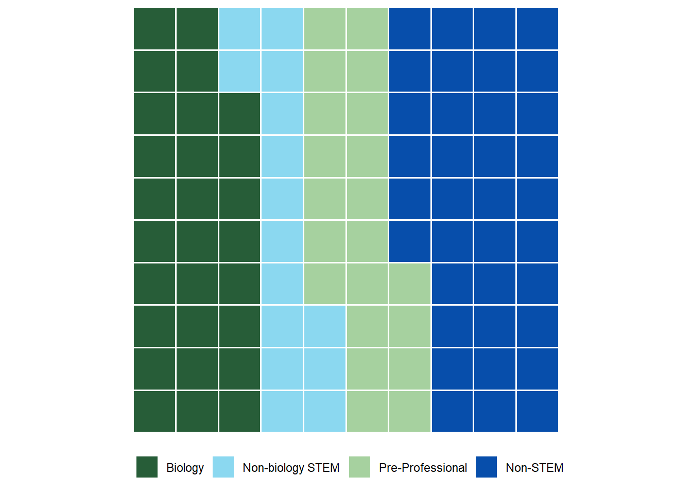
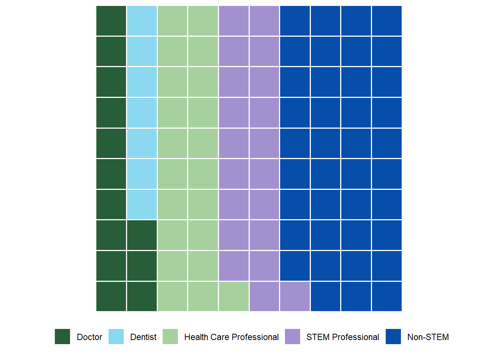
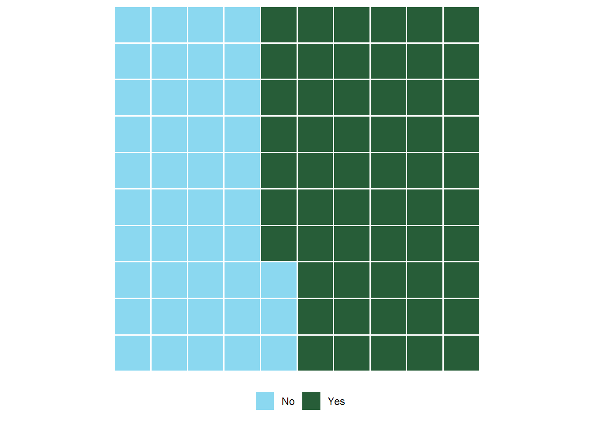

Results
Please see the following for the results we got for each demographic group. To see the R code for this, follow this link!
Demographics
Each block represents 1%, but there are some demographics that have less than 1%. These are identified by 1 block, though they are smaller than the 1%.
Major
The data indicates the distribution of career aspirations among the respondents. Approximately 29% of them expressed an interest in Biology, while Non-biology STEM fields accounted for around 16% of the responses. Pre-Professional aspirations represented approximately 21% of the respondents, and Non-STEM career paths comprised about 34% of the total aspirations reported.
Year in School

The data represents the distribution of students across different academic years. Among the students surveyed, 36% were Freshmen, 31% were Sophomores, 18% were Juniors, and the remaining 22% were Seniors.
Career Aspiration

Non-STEM took the largest percent of the graph with 39%. STEM professionals took nearly twenty percent (20%), which was similar to the 21% of those who wished to be health care professionals. Those who wish to be a dentist or a doctor took a combined 20% (with those who wish to be dentists taking 7% and those who wished to be doctors taking 13%).
Ethnicity

The data illustrates the racial and ethnic distribution of the surveyed individuals. Among the respondents, 1.6% identified as Black, 0.6% as Native American, 0.2% as Middle Eastern, 3.8% as Asian, 6.4% as Latina/o, 1.6% as Multiracial, 1% as Pacific Islander, and the majority, 78.7%, identified as White.
Gender

The data represents the gender distribution of the respondents. Among those surveyed, 50.8% identified as Men, 0.5% as Transgender, 46% as Women, and 1.3% as Fluid / Gender Non-Conforming.
Religious?

The data indicates the distribution of respondents based on their religious affiliations. Among those surveyed, approximately 27% identified as Non-Religious, while around 73% identified as Religious.
First Generation Student?

The data represents the distribution of students based on their generational status. Among those surveyed, approximately 76% identified as Continuing Generation Students (at least one parent attended college), while around 24% identified as First Generation Students (no parents attended college).
Medical Experience?

The data illustrates the percentage of those who identified to have had a medical experience. Among those surveyed, approximately 44% answered “No” while around 56% answered “Yes”.
Chronic Condition?

Of those who identified as had a medical experience, approximately 60% answered “No” while around 40% answered “Yes” to whether they have a chronic condition.
Correlations

The graph uses a gradient system done by color to represent the strength and direction of correlations, with darker colors indicating stronger positive or negative correlations and lighter colors representing weaker correlations. This is done over 10 categories that are compared on a scale from -1 to 1.
Pre & Post Semester Analysis

The graph visually presents the pre- and post-semester changes for different pairs of variables, highlighting significant differences between the two time points for each pair. Bars showing the deviation between each group with black dots indicate significance. Science identity had overall the most variance in mean over the course of the semester. While science carrier motivation had the largest single mean change. Science interest had a similar large change in one area like science career motivation did. Self determination was an outlier that had less variance overall. Self-efficacy and community in science changed similar but in difference sections with different means.